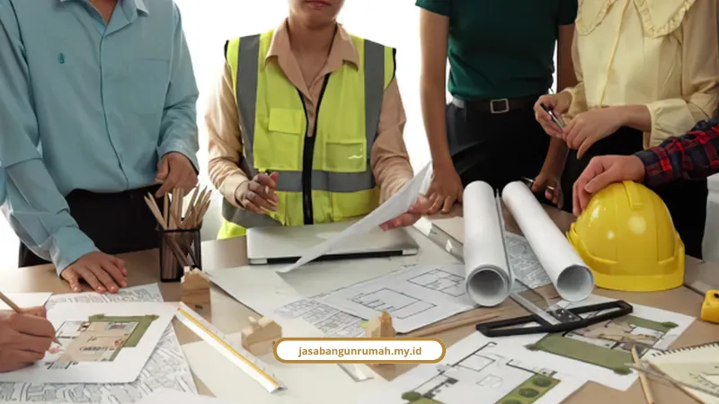

Daftar Isi
Kami adalah kontraktor berizin Surabaya yang legalitasnya terdaftar lewat NIB dan SBU Konstruksi resmi, bukan sekadar mengandalkan istilah SIUJK lama yang sudah tidak berlaku sendiri. Semua bisa dicek langsung secara online.
Apakah SIUJK Masih Berlaku sebagai Bukti Izin Kontraktor?
Istilah SIUJK bentuk lama sudah tidak diterbitkan lagi secara terpisah sejak berlakunya sistem OSS RBA berdasarkan Undang-Undang Cipta Kerja dan PP No. 5 Tahun 2021. Jadi kalau ada kontraktor rumah yang masih pamer "SIUJK" sebagai satu-satunya bukti, itu perlu dicek ulang.
Sekarang, legitimasi kontraktor ditentukan oleh kombinasi dua dokumen:
- NIB (Nomor Induk Berusaha), diterbitkan lewat OSS RBA sebagai identitas resmi dan legalitas dasar badan usaha
- SBU (Sertifikat Badan Usaha) Konstruksi, diterbitkan Lembaga Sertifikasi Badan Usaha (LSBU) terakreditasi yang terhubung dengan LPJK Kementerian PUPR
Payung hukumnya juga jelas, dari UU No. 11 Tahun 2020 atau UU No. 6 Tahun 2023 tentang Cipta Kerja, PP No. 5 Tahun 2021, PP No. 28 Tahun 2025, sampai Peraturan Walikota Surabaya No. 31 Tahun 2008 soal tata cara pemberian izin usaha jasa konstruksi di daerah.
Erlang Sinatrya, Lead Project Engineer kami, menegaskan pentingnya hal ini: "Membangun rumah adalah investasi ratusan juta rupiah; legalitas kontrak dan garansi resmi bukan sekadar formalitas, melainkan benteng perlindungan aset dan ketenangan keluarga Anda."
Kalau Anda sudah cukup yakin dengan legalitas dan mau lanjut bahas soal biaya dan alur kerjanya, kami sudah rangkum semua itu di jasa konstruksi rumah Surabaya yang kami sediakan.
Apa Bedanya Kontraktor Resmi dengan Pemborong Harian?
Perbedaan utamanya ada di legalitas, kontrak, dan garansi. Kontraktor resmi berbadan hukum punya NIB dan SBU aktif, sementara pemborong harian umumnya bekerja tanpa kontrak formal.
Ciri kontraktor resmi berbadan hukum (PT/CV) seperti ini:
- Beroperasi dengan legalitas jelas, NIB dan SBU Konstruksi aktif
- Pakai Surat Perjanjian Kerja (SPK) tertulis yang mengikat hak, kewajiban, jadwal kerja, dan RAB terkunci (lump sum)
- Ada pengawasan terstruktur dari insinyur sipil dan arsitek perencana
- Memberi garansi pemeliharaan (retensi) tertulis selama 3 sampai 12 bulan untuk perbaikan kebocoran atau kerusakan struktur tanpa biaya tambahan
Sebaliknya, pemborong harian perorangan biasanya:
- Bekerja sendirian tanpa badan hukum dan tanpa kontrak formal, hanya kesepakatan lisan
- Satu mandor merangkap banyak peran, dari belanja material sampai bikin estimasi, tanpa perhitungan teknik baku
- Berisiko tinggi terjadi manipulasi spesifikasi material dan proyek ditinggal mangkrak
- Tidak ada garansi resmi kalau muncul kerusakan pascabangun
Bukan berarti pemborong harian selalu buruk, tapi risiko yang Anda tanggung jauh lebih besar tanpa payung hukum yang jelas.

Apa Sanksi bagi Perusahaan Konstruksi Tanpa SBU?
Perusahaan tanpa SBU Konstruksi menghadapi sanksi berat, mulai dari larangan ikut tender sampai masuk daftar hitam pengadaan nasional. Ini bukan aturan main-main, melainkan konsekuensi hukum yang bisa mematikan usaha.
Berikut lima sanksi yang berlaku:
- Dilarang mengikuti tender atau lelang proyek, baik proyek pemerintah maupun swasta
- Pembekuan Izin Usaha Jasa Konstruksi atau Perizinan Berusaha
- Pencabutan izin usaha secara permanen jika nekat tetap beroperasi
- Denda administratif dalam jumlah besar
- Masuk Daftar Hitam (Blacklist) pengadaan nasional
Sanksi seberat ini menunjukkan betapa seriusnya pemerintah menata industri konstruksi supaya konsumen terlindungi.
Bagaimana Cara Cek Legalitas Kontraktor Secara Online?
Anda bisa cek legalitas kontraktor lewat lima langkah sederhana secara online, tanpa perlu datang langsung ke kantor pemerintahan. Semua portalnya resmi dan bisa diakses gratis.
- Cek NIB dan KBLI di OSS untuk memastikan status perizinan aktif dan bidang usaha sesuai jasa konstruksi
- Cek status badan hukum di AHU Online untuk memastikan PT/CV berstatus "Aktif" dan nama direksi sesuai pihak yang menandatangani kontrak
- Cek status pajak (NPWP dan PKP) di DJP untuk memastikan kepatuhan administrasi perpajakan
- Cek keaktifan SBU di portal LPJK atau LSBU untuk memastikan sertifikat masih berlaku
- Konfirmasi ke DPMPTSP Kota Surabaya di Gedung Siola, Mal Pelayanan Publik Lantai 3, Jl. Tunjungan No. 1-3 Surabaya
Yohanes Franklin, S.H., Koordinator Pengaduan DPMPTSP Kota Surabaya, adalah pihak yang bisa dihubungi untuk edukasi soal transparansi perizinan daerah semacam ini.
Kenapa Legalitas Ini Penting untuk Klien di Surabaya?
Legalitas yang jelas melindungi investasi klien dari risiko proyek mangkrak, sengketa kontrak, dan kerugian finansial yang sulit ditelusuri. Tanpa NIB dan SBU aktif, klien nyaris tidak punya pegangan hukum kalau ada masalah.
Kami memastikan seluruh proses, mulai dari penandatanganan SPK sampai pengurusan izin PBG, berjalan sesuai koridor hukum yang berlaku. Ini juga selaras dengan layanan jasa kontraktor bangunan yang kami sediakan untuk proyek komersial maupun hunian.
Legalitas Bukan Formalitas, tapi Perlindungan
Di tengah maraknya kasus proyek mangkrak dan tukang kabur, legalitas kontraktor jadi hal pertama yang wajib dicek sebelum tanda tangan kontrak apa pun. NIB dan SBU aktif adalah bukti nyata, bukan sekadar klaim di brosur.
Kalau Anda ingin memastikan proyek rumah atau ruko Anda ditangani pihak yang benar-benar berizin, silakan konsultasikan kebutuhan Anda lewat halaman layanan kami di jasa kontraktor rumah.